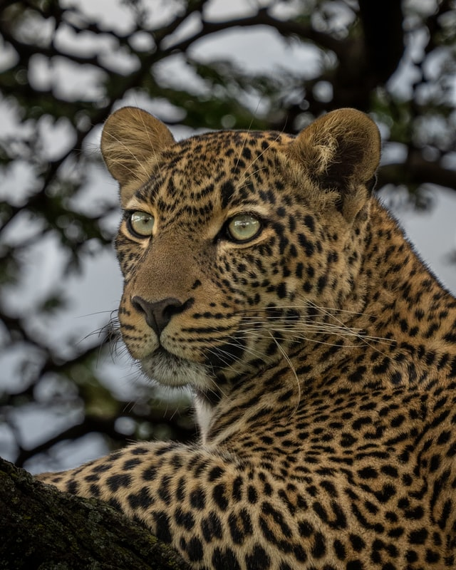
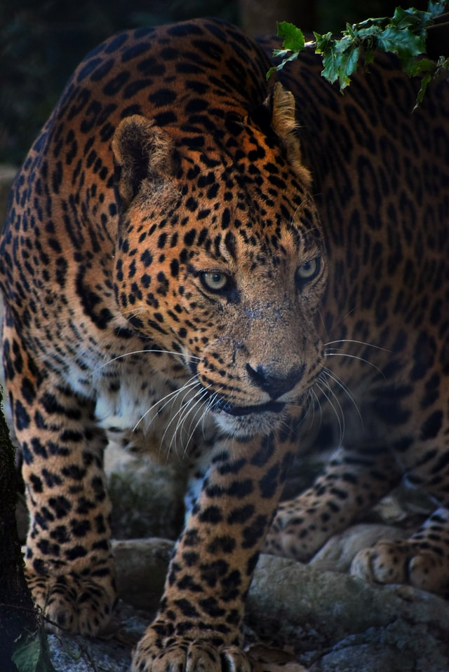
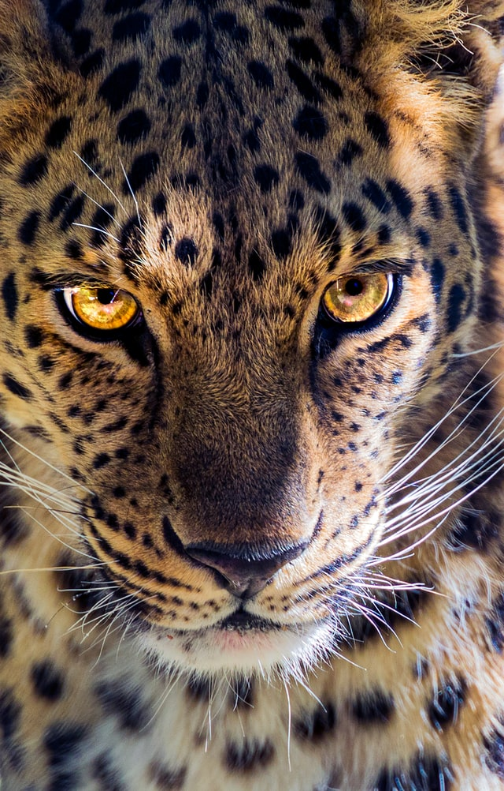
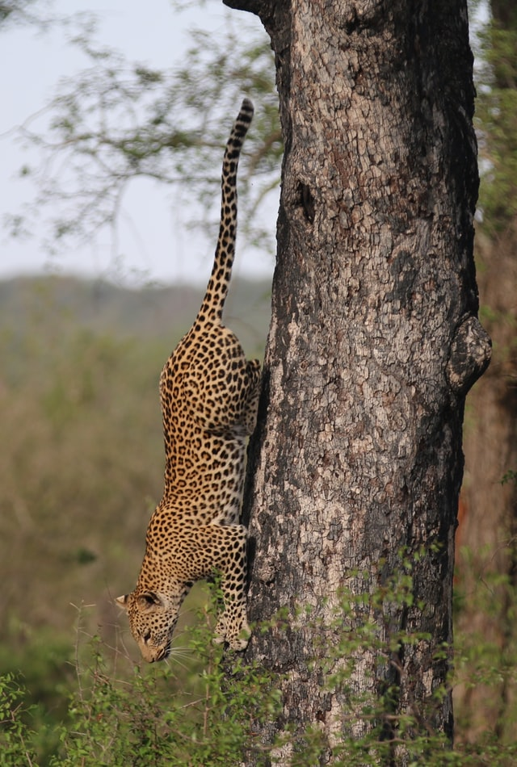

Leopard |
||
|  | ||
Leopard, (Panthera pardus), also called panther, large cat closely related to the lion, tiger, and jaguar. The name leopard was originally given to the cat now called cheetah—the so-called hunting leopard—which was once thought to be a cross between the lion and the pard. The term pard was eventually replaced by the name leopard. Leopards are reclusive and known for their ability to adapt, traits that have led some wildlife biologists to assume that the animals remained relatively abundant in the wild. The leopard is likely the most persecuted large cat in the world.Extinct in 13 countries/regions and possibly extinct in seven more, leopards have vanished from at least two-thirds of their historic range in Africa and 84 percent of their historic range in Eurasia. |
||
 |
|
 |
Distribution and habitatThe leopard has the largest distribution of all wild cats, occurring widely in Africa, the Caucasus and Asia, although populations are fragmented and declining. It is considered to be extirpated in North Africa. It inhabits foremost savanna and rainforest, and areas where grasslands, woodlands, and riverine forests remain largely undisturbed. In sub-Saharan Africa, it is still numerous and surviving in marginal habitats where other large cats have disappeared. There is considerable potential for human-leopard conflict due to leopards preying on livestock. Leopard populations on the Arabian Peninsula are small and fragmented. In southeastern Egypt, a leopard killed in 2017 was the first record in this area in 65 years. In western and central Asia, it avoids deserts, areas with long snow cover and proximity to urban centres. In the Indian subcontinent, the leopard is still relatively abundant, with greater numbers than those of other Panthera species. As of 2020, the leopard population within forested habitats in India's tiger range landscapes was estimated at 12,172 to 13,535 individuals. Surveyed landscapes included elevations below 2,600 m (8,500 ft) in the Shivalik Hills and Gangetic plains, Central India and Eastern Ghats, Western Ghats, the Brahmaputra River basin and hills in Northeast India. Some leopard populations in the country live quite close to human settlements and even in semi-developed areas. Although adaptable to human disturbances, leopards require healthy prey populations and appropriate vegetative cover for hunting for prolonged survival and thus rarely linger in heavily developed areas. Due to the leopard's stealth, people often remain unaware that it lives in nearby areas. In Nepal's Kanchenjunga Conservation Area, a melanistic leopard was photographed at an elevation of 4,300 m (14,100 ft) by a camera trap in May 2012. In Sri Lanka, leopards were recorded in Yala National Park and in unprotected forest patches, tea estates, grasslands, home gardens, pine and eucalyptus plantations. In Myanmar, leopards were recorded for the first time by camera traps in the hill forests of Myanmar's Karen State. The Northern Tenasserim Forest Complex in southern Myanmar is considered a leopard stronghold. In Thailand, leopards are present in the Western Forest Complex, Kaeng Krachan-Kui Buri, Khlong Saeng-Khao Sok protected area complexes and in Hala Bala Wildlife Sanctuary bordering Malaysia. In Peninsular Malaysia, leopards are present in Belum-Temengor, Taman Negara and Endau-Rompin National Parks. In Laos, leopards were recorded in Nam Et-Phou Louey National Biodiversity Conservation Area and Nam Kan National Protected Area. In Cambodia, leopards inhabit deciduous dipterocarp forest in Phnom Prich Wildlife Sanctuary and Mondulkiri Protected Forest. In southern China, leopards were recorded only in the Qinling Mountains during surveys in 11 nature reserves between 2002 and 2009. |  | |
Conversation IssueThe leopard is listed on CITES Appendix I, and trade is restricted to skins and body parts of 2,560 individuals in 11 sub-Saharan countries. The leopard is primarily threatened by habitat fragmentation and conversion of forest to agriculturally used land, which lead to a declining natural prey base, human–wildlife conflict with livestock herders and high leopard mortality rates. It is also threatened by trophy hunting and poaching. Between 2002 and 2012, at least four leopards were estimated to have been poached per week in India for the illegal wildlife trade of its skins and bones. In spring 2013, 37 leopard skins were found during a 7-week long market survey in major Moroccan cities. In 2014, 43 leopard skins were detected during two surveys in Morocco. Vendors admitted to have imported skins from sub-Saharan Africa. Surveys in the Central African Republic's Chinko area revealed that the leopard population decreased from 97 individuals in 2012 to 50 individuals in 2017. In this period, transhumant pastoralists from the border area with Sudan moved in the area with their livestock. Rangers confiscated large amounts of poison in the camps of livestock herders who were accompanied by armed merchants. They engaged in poaching large herbivores, sale of bushmeat and trading leopard skins in Am Dafok. In Java, the leopard is threatened by illegal hunting and trade. Between 2011 and 2019, body parts of 51 Javan leopards were seized including six live individuals, 12 skins, 13 skulls, 20 canines and 22 claws |
||